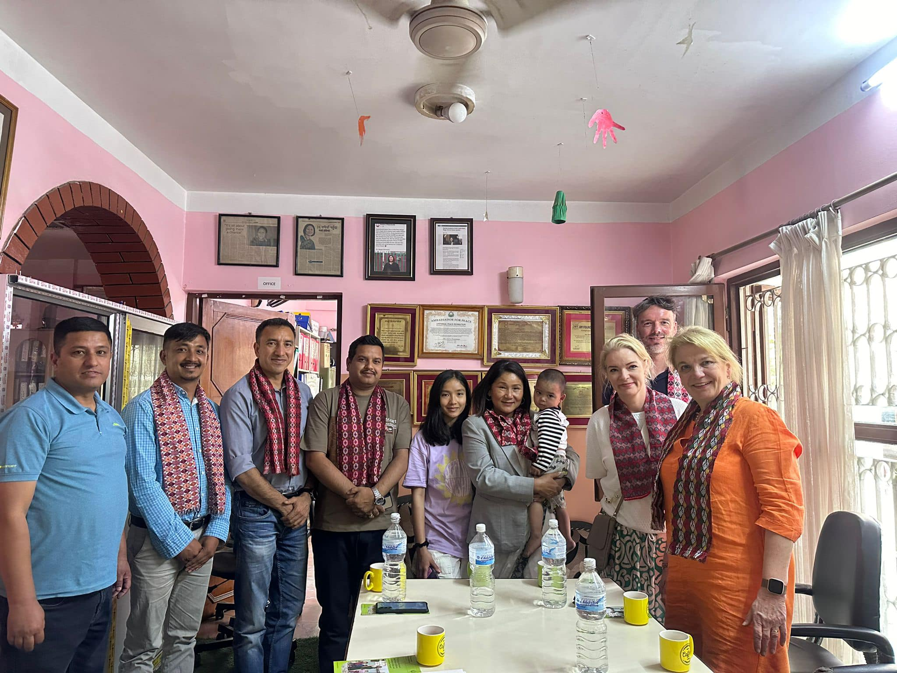

Project Overview
The KUSHAL Project is a long-term initiative aimed at providing short-term
TVET (Technical
and Vocational Education Training) to large number of MOTIVATED & DEDICATED
individuals in Nepal. The training periods will range from one month to one
year, focusing on
improving skills, fostering economic independence, and enhancing
livelihoods, particularly
for socially disadvantaged groups.
Goal
To combat poverty and promote economic independence through skill-based
education,
thereby empowering individuals to avoid unskilled labor and emigration while
utilizing local
intellectual capital.
Target Audience
Motivated individuals, especially from socially backward and economically
marginalized
groups across Nepal, with a focus on those looking to improve their
livelihood through skills
development.
Changunarayan Foundation (CNF)
Changunarayan Foundation (CNF) Jaukhel 03 Changunarayan Municipality
Bhaktapur is a
nonprofit oriented organization easbtlished in 2021 AD aimed at improving
the living
conditions and future prospects of socially backward and outreach groups in
Nepal. It focus on
Technical and Vocational Education and Training (TVET) and livelihood
improvement
training. The board is lead by Mani Raj Khatri (Founder President) and other
four members .
Social Development Nepal (SDN)
Social Development Nepal (SDN) is a foundation, established in 2022 in the
Netherlands that
focuses on improving the quality of life of children and adults in Nepal.
The goal is to
sustainably fight against poverty and promote economic independence through
short TVET
programmes. SDN thereby supports the self-determination of families, so that
they do not have
to do unskilled work far from home and intellectual capital does not go
unused. More
information can be found on their website
Stakeholders and Partners
The project seeks collaboration with a range of stakeholders, including:
-
Federal, provincial, and local governments
- NGOs/INGOs
-
Industry associations and corporations
-
Training service providers
-
Microfinance institutions
-
Civil society organizations
Key Objectives
-
Provide market-relevant vocational skills to over 100,000
individuals.
-
Foster partnerships with governments, corporations, and training
service providers.
-
Facilitate On-The-Job Training (OJT) and job placements for
graduates.
-
Promote entrepreneurship by connecting graduates with financial
instutions for startup loans
to start their own enterprises.
-
Reduce emigration by creating local employment opportunities.
Implementation Modality
The project will undergo a pilot phase in specific high-demand trades.
Following a successful
pilot, the program will expand based on local demand and stakeholder
interest. The project
promotes financial cost-sharing among stakeholders, including the
participants,
municipalities, and corporate entities.
Training & Employment Assurance
Each training phase will include screening of candidates, career counseling,
and a strong
focus on job placements. Ensuring employment for a substantial number of
graduates is a key
goal of the project.
Long-term Impact
The KUSHAL Project aims to create a sustainable local workforce, improve the
socioeconomic status of participants, and contribute to Nepal's overall
development by focusing on
skill development and job creation.
The project will start with a stakeholder assessment to align mutual
interests and formalize
partnerships. A tripartite agreement will be signed with government
authorities , corporations
and training providers to ensure placement opportunities for trained
graduates.
This structured approach ensures that the KUSHAL Project will have a broad
and meaningful
impact over the next decade, focusing on sustainable economic growth through
skills
development